Сезонные предложения

Немного о нас
У нашего магазина многолетняя история, начавшаяся еще глубоко в Советское время. Когда все кругом рушилось и закрывалось, мы сумели уцелеть, вовремя и хорошо модернизироваться, но при этом сохранить лучшее, что было. Например, волшебный вкус пирожных и тортов продающихся в нашем магазине.
В 2011 году мы усовершенствовали и расширили пекарню и теперь изготавляем не только классический ассортимент сладостей, но и принимаем заказы на торты. При этом вы можете самостоятельно выбрать не только внешний вид, но и состав изделия. А уж за качество используемых компонентов мы готовы ответить.
Универсам «Невский» по праву гордится своими поварами-кондитерами. Они уже неоднократно доказывали, что не существует слишком сложных заказов на торты. Существует лишь лень или отсутствие воображения у мастеров других компаний. Наши кондитеры берутся и блестяще выполняют даже самые трудоемкие заказы.
Если вы готовитесь к какому-нибудь празднику, то вам не обойтись без сладкого блюда. Для небольшого фуршета или посиделок с друзьями хватит набора пирожных, да тарелки фруктов. Однако, невозможно представить себе свадьбу или день рождения без большого и вкусного праздничного торта! Следуя последним модным тенденциям, молодожены стараются перещеголять друг друга в оформлении праздника. Каждой паре хочется сделать свой праздник эксклюзивным, запоминающимся и «таким, как мечталось». Красивый свадебный торт в этом случае обязателен!
Вы можете купить у нас торт с индивидуальным дизайном, датой свадьбы или дня рождения, именами виновников торжества и совершенно любыми украшениями, сделав при том всего один телефонный звонок. Консультант поможет определиться с формой, цветом, размером и составом будущего кондитерского шедевра. Звонить нужно предварительно, за три дня и вы сразу узнаете цену и сроки изготовления.
Каравай и другая сдобная выпечка.
Универсам «Невский» печет свадебные караваи с несколькими вариантами оформления и по весьма приятной цене. Выполняем даже срочные заказы.
Так же у нас превосходнейшие бублики, качества, которое вы больше нигде не найдете. Ведь все мучные изделия изготавливаются исключительно на сливочном масле.
Помимо того, что вы можете купить торт в Универсаме «Невский», вы можете заказать у нас услугу «Скатерть самобранка». Наши повара полностью накроют ваш праздничный стол от салфеток до изысканнейших кулинарных блюд.
Звоните нам по телефону:
8(812)588-52-07
чтобы заказать торт, пирожные или любое другое лакомство по вашему вкусу.
Пирожные
- 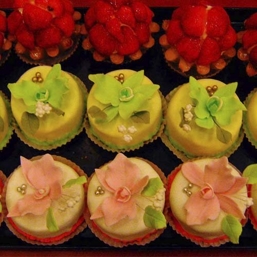
Набор "Нежность"
Комплект из 15 пирожных по 5 каждого вида.
Фрукты
Пирожные в виде фруктов и ягод, прямиком из печки.
Фруктовая корзинка
Легкое, с белковым кремом и свежими фруктами пирожное. Для украшения используется клубника и ежевика.
Большое ассорти
Комплект из круглых и треугольных пирожных в которых каждый найдет для себя индивидуально-вкусное. Все пирожные можно заказать по отдельности.
Эклер классический
Многими любимая классика жанра. Вкус, который помнится еще с детства. Мы изготавливаем эклеры еще по советской рецептуре.
- 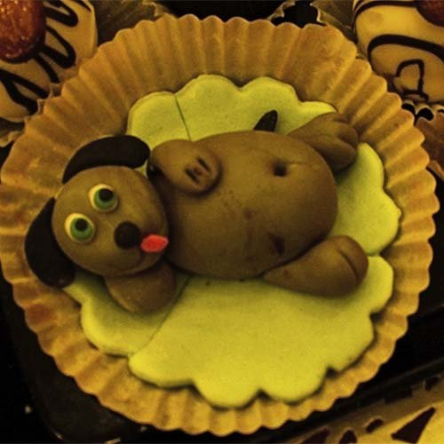
Пирожное "Друг человека"
Марципановая собачка будет не толко вкусным, но и веселым угощением к чаю. Особенно такое лакомство должно понравится детям и любителям животных.
Конфеты "медальончики"
Эти неболшие по размеру пирожные специально созданы для милых женских чаепитий. Полезный миндаль и красивая клубничка легко помещаются в рот за один прием.
Запасливый ёжик
Полный аналог знаменитого торта "ёжик" только неболшого размера. По вкусу похоже на не менее популярное пирожное "картошка", однако дополнено шоколадным кремом и вишенкой.
Мышкино счастье
Пирожное в виде куска сыра, облюбованного семейством марципановых мышей. Специальное предложение для любителей мультиков про серых и хвостатых.
Валентинки
Специальная серия пирожных ко дню Святого Валентина. Покрыты красной глазурью и украшены мастичными цветами. Все съедобно.
Загадочные гусеницы
Эргономичные пирожные. А вдруг они преврятятся в бабочек у вас в животе?

Смешарики
Вы можете заказать пирожное для своего ребенка в виде полюбившихся ему героев мультфильма. Изготавливается исключительно из проверенных и безвредных компонентов.

Торты
Пряничный Домик
Новогодний Пряничный домик - прекрасное дополнение любого праздничного стола. Выполнен из нескольких коржей (четырёх «стен» и «крыши»). Изготовленные коржи смазаны яйцом, выпечены и охлаждены. Склеены между собой густым сахарным сиропом. «Стыки» между коржами покрыты сахарной или шоколадной глазурью.
Торт "Олаф"
Снеговик "Олаф" - прекрасное угощение, выполненное в виде снеговика из мультфильма "Холодное сердце". Наш магазин дает Вам удивительную возможность съесть этого волшебного снеговика.
Дед Мороз и Олени
За основу взят торт "Ночка". Добавлены фигурки оленей и деда мороза, который уже успел откусить кусочек.
Карманные часы
Кремовый торт в виде карманных часов на которых застыло время без 5 минут Новый Год.
В лесу родилась елочка...
Мешок подарков
Торт, рядом с которым будет отлично смотреться любой Дед Мороз.
Снеговик спешит на Новогоднюю Елку
Использован как основа домашний медовый бисквит. Прослойка из сливок и клубничного конфитюра. Торт украшен клубничным крем-филом, сливочным и шоколадным кремом. Фигурки выполнены из глазури. Очень вкусно .
Розовый букет
Букет на подушке - частая тема в заказых тортиках. Но кондитеры универсама Невский научились превращать такие тортики в настоящие шедевры. Цветы почти не отличимы от живых.
Торт Клумба
Комплект из тортика и пирожных с нежным цветочным оформлением.
Птичье молоко (классика)
Состоит из нежного ванильного суфле. Украшен шоколадом и свежими ягодами.
Корзина цветов
Даже сложно сказать что обойдется дешевле - заказать торт в виде цветочной корзины или купить букет живых цветов. Согласитесь, что сладкий подарок всеже интереснее.
Корзина цветов
Даже сложно сказать что обойдется дешевле - заказать торт в виде цветочной корзины или купить букет живых цветов. Согласитесь, что сладкий подарок всеже интереснее.

Подарочный (классика)
Белоснежный бисквит, нежный маслянный крем украшенный орехом "арахис", шоколадом и свежей вишней.
Сметанно-ягодный (классика)
Медовые коржи и сметанный крем с украшением из свежей брусники - составляющие этого изделия.
Графские развалины
Хрустящее безе, масляный крем, чернослив, орехи и шоколад.
Ягодный бассейн
Глядя на этот торт так и хочется окунуться с головой в мир ягод. Классический чизкейк с клубникой. Удивительно вкусный и сытный.
Наполеон (классика)
Нежные коржи пропитаны масляным кремом. Украшен вишней и шоколадом.
Киевский (классика)
Миндально-ореховые коржи, безе и шоколадный крем.Украшен розами из сливок и шоколадом.
Персик-маракуйа суфле (классика)
Персиковое суфле на тонком слое бисквита. Украшен ягодами маракуйа.
Зеленое яблоко (суфле)
Суфле "зеленое яблоко" на тонком слое бисквита. Украшен манго, персиком, маракуйа.
Муравейник (классика)
Медовые коржи, сметанно-маковый крем. Украшения - шоколадом и свежая брусника.
Пьяная вишня
Шоколадный бисквит с вишнево-сметанным кремом.
Ленинградский
Нежные песочные коржи, шоколадный крем, прослойка из конфитюра "Брусника".
Захер торт (классика)
Шоколадный бисквит с шоколадной заливкой и прослойкой из конфитюра "Малина". Украшен шоколадом и отборными свежими ягодами.
Ночка
Шоколадный бисквит, нежный заварной крем и прослойка из малины. Украшен бисквитной крошкой и ягодами.
Прага (классика)
Шоколадный бисквит с шоколадным кремом с прослойкой из конфитюра "Брусника"
Королевская фантазия (классика)
Воздушно-миндальные коржи пропитаны заварным кремом и украшены лепестками из миндаля
Чизкейк (классика)
Тонкий слой песочного теста с творожной начинкой. Используются свежие ягоды.
Манго-манго
Суфле из манго на слое тонком слое бисквита . Украшен джемом и кусочками манго.
- 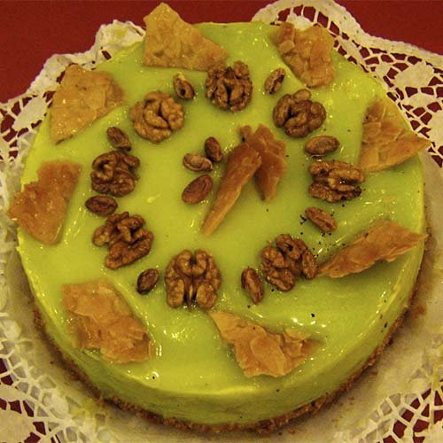
Фисташковый
Шоколадный бисквит с фисташковыми сливками. Для украшения использован фисташковый марципан с грильяжным декором и орехами.
Лайм-суфле (классика)
Лаймовое суфле на тонком слое бисквита. Украшен смородиной и лаймом.
- 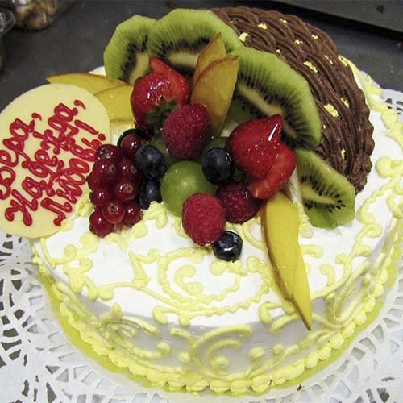
Элитный
Один из самых популярных тортов от универсама Невский. По опросам покупателей, больше всего в его оформлении нравится кружевная фактура.
Садовая роза
Описание: Бисквитный торт с шоколадно-сливочной начинкой под зеленой глазурью. Эффектно дополнен розовой шоколадной розой. Все использующиеся красители одобрены Министерством Здравоохранения.
- 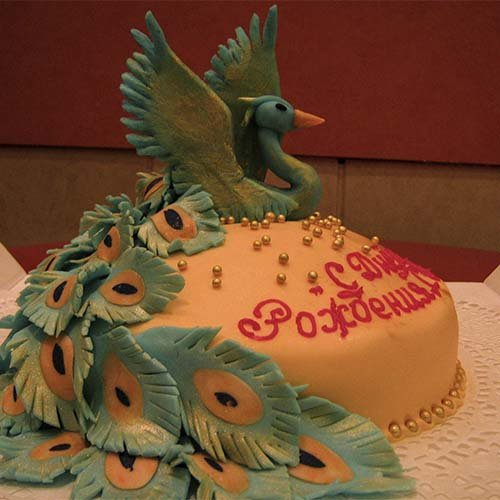
Жар Птица
Торт на День Рождения. Украшение сделано из мастики.
Маки
Геометрия данного лакомства вызывает приятные эмоции. Два квадрата, сложенные по диагонали друг к другу, напоминают детские кубики. А украшение в виде цветущих маков порождает мысли о теплом и солнечном лете или весне в Крыму.
Нежность
Белоснежный бисквит, белый шоколад, йогуртовые сливки, прослойка из конфитюра "малина".

Любимой кошечке
Угостите своего котенка или кошечку таким лакомством и 100 процентов увидите улыбку на её или его лице. Приятности не требуют особых поводов.
Нарциссы
Мастика позволяет создавать идеально ровную поверхность на любом торте. В данном экземпляре использовано украшение в виде нарцисов, но можно установить и другие цветы.
- 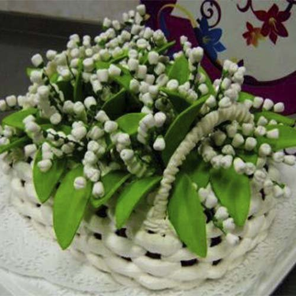
Ландыши
Весеннее праздничное настроение за столом создаст букет из свежих ландышей.
Фруктово-ягодный
Прослоеные сливками с малиновым конфитюром белоснежный бисквит сменяет шоколадный и украшен сливками, фруктами, желе и орехами. Приятного аппетита!
Бисквитный с ягодами
Такая сладкая вкусняшка уже была представлена в нашей галерее, но хорошую вещь не грех продемонстрировать дважды.

Натюрморт тематический
Съедобный натюрморт на большую женскую компанию. Купить торт можно и без повода, ведь при желании праздник может быть каждый день.
Торт Свадебный
Несмотря на три яруса конструкция из белоснежного бисквита и сливок кажется легкой и невесомой. Украшен ягодами и мастикой.
День рождения Мити
Белоснежный бисквит и сливки с вареным сгущенным молоком. Используются бананы. Украшен мастикой.
Свадебный
Свадебный многоярусный торт, украшенный марципановыми фигурками жениха и невесты. Дополнительные украшения из экзотических фруктов и засахаренных цветов пропитанных специальным составом придадут пикантность этому произведению искусства.

С Днем Рождения, Мариночка !
У Мариночки сегодня День Рождения. Какое угощение должно быть на праздничном столе когда виновнику торжества исполнилось целых восемь лет? Ну, конечно же торт от Торговой фимы "Невский". И тогда веселый праздник детства станет еще и сладким, и вкусным.


Мучные изделия
Пасхальные наборы
Вы можете заказать набор или отдельное изделие.
Плетенка с маком
Сдобный батон с маком. Такой можно найти в любом магазине, но пока не попробуете наш - не узнаете насколько это может быть вкусно.
Плетёнка
Секрет успеха - мягкое качественное тесто, много мака и приготовление с любовью!
- 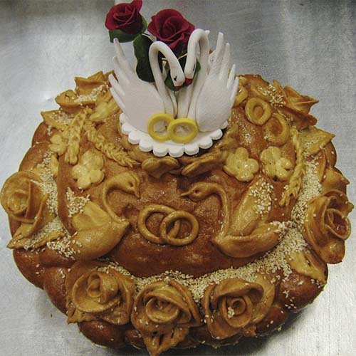
Свадебный каравай
Традиционный каравай, с которым встречают молодых родители. Красота изделия играет немаловажную роль, ведь в этот момент делается масса фотографий для свадебного альбома.
Бублики баранки
Румяные, мягкие и душистые. То, что надо!
Рулет с сыром
Сыра не жалеем, за качеством теста пристально следим. И мы НЕ используем маргарин, столь любимый многими нашими конкурентами.
Орешки со сгущенкой
С давних пор любимая сладость к чаю - орешки с вареной сгущенкой. Тот самый вкус, который был в детстве.
Пряничный домик
Пряничный домик - классика американских рождественских мультфильмов. Теперь и на ваших столах.
Совет да любовь
Еще одна разновидность свадебного каравая. Предусмотрена удобная и вместительная емкость для солонки.
Песочные розетки
Для того, чтобы песочное тесто хорошо пропекалось и было вкусным, нужна хорошая равномерная духовка. У нас она именно такая. И джем мы используем только проверенно качественный и натуральный.

Миндальные коржи
Эти коржики, внешне похожие на чипсы, очень приятно хрустят на зубах из-за сахарной обсыпки, поверх миндаля.
Ромовая баба
Для хорошей ромовой бабы никак нельзя использовать низкопробный спирт, только ром или бренди. Их и используем.
Баранки
Стенд с баранками - подходи, налетай, разбирай пока свежие!
Цветной каравай
Яркое украшение свадебного торжества. Кто сказал, что традиции должны быть монохроными?
Миндальное печенье
Миндальное печенье - просто и вкусно. В классическом исполнении и залитое шоколадом.

Салаты
Букет
Красивые и съедобные розы внезапно расцвели на этом салате. Трудоемкое искуство садоводов-поваров не перестает восхищать. И данный шедевр может стать вашим за совсем небольшую сумму. Отличный вкус в подарок гарантируем.
Мимоза
Классический салат "Мимоза" может быть гораздо интереснее, если добавить к нему простое украшение в виде ветки укропа с лимонной цедрой. Мужчины, если вы не уверены в своем кулинарном мастерстве - закажите салат у нас.
Печеночный торт
Замечательная закуска, способная украсить доброе застолье и не затеряться среди прочих блюд!. Нежная куриная печень, используемая для коржей украшена сладким перцем, яйцом, зеленью и оливками. «Вкусно и полезно» именно под таким девизом можно подать этот печеночный торт.
Лакомка
Ингредиенты – сплошное лакомство и польза: куриная грудка, сыр, чернослив…
- 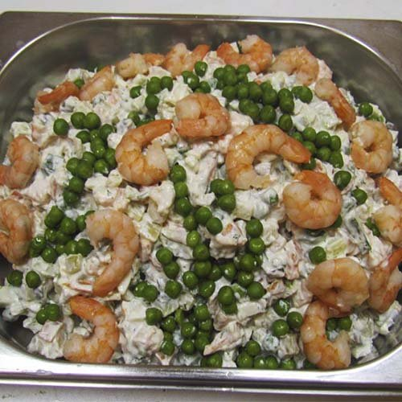
Оливье "Элитный с креветками"
Универсам Невский не будет вас интриговать составом данного салата. Все ясно и так. Но пробовали ли вы, хоть один раз, начистить креветок на салат для 5-10 человек?
Легкий с авокадо
Приятное сочетание крабовых палочек, авокадо и листьев салата, дополнено легким майонезом. Он не повредит вашей фигуре и принесет пользу организму.
- 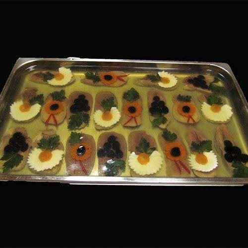
Заливное из языка
Изысканное блюдо, обманчиво напоминающее бассейн с карпами. Очень вкусное блюдо, которое не так-то просто приготовить в домашних условиях.
Здоровье
В состав этого блюда входят китайская капуста, яблоко и грецкие орехи. Иключительно полезные для здоровья компоненты.
Салат с манго
Сочетание манго, редиса и листьев салата придает пикантный и неожиданный вкус данному блюду. Попробуйте.
Лосось заливной
А вот здесь уже представлен настоящий бассейн с красной рыбкой. Лови, да кушай!
Рыба заливная
"Ну и гадость же ваша заливная рыба!", - говорил герой известного фильма, и продолжал её есть. На этот раз Вам предлагается классика жанра в виде цветущего пруда. Сделайте праздничный стол не только вкусным, но и красивым.

Щука с огоньком
Фаршированная щука, по уникальной технологии, исключительно без костей!
Форшмак из сельди
Вот она - рыба моей мечты! Съедобный Сельдяной Король! Прямиком из древних Скандинавских преданий к Вам на праздничный стол!
Восторг
Название салата говорит само за себя. Именно слово "Восторг!" вы скажете, попробовав его впервые.
Дамский каприз
Женщины по своей природе существа капризные . Им свойственно долго выбирать и сомневаться. Если в вашем коллективе присутствуют дамы - купите данный салат. Все леди от самых юных, до... возраста третьей молодости... будут довольны.
Грибная поляна
Сытный осений салат, которые не оставит равнодушным ни одного мужчину. Картошечка с опятами! Ммммм...Универсам "Невский" рекомендует!
Граф Орлов
Как известно, все братья Орловы, были крупными и сильными мужчинами. Не известно в честь какого из них названо блюдо, но один его вид внушает уважение к известным личностям истории России.
Снеговики
Истинно зимний дизайн для овощного салата. Особенно актуален в бесснежные Петербуржские зимы.

Долголетие
Заботой о здоровье сыт не будешь. А вот этим салатом и насытится можно и витаминами с минералами зарядиться. Каждые откушанные 100 грамм такого блюда + 1 год к жизни!
- 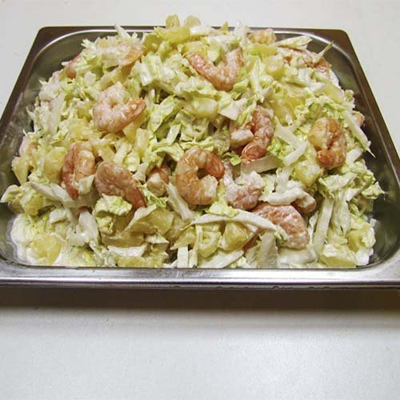
Креветочный
Легкий из морепродуктов и свежих овощей.
Приморский
Лично мне внешний вид данного салата напоминает руины маленького литовского городка... Да простят меня литовцы...
Бомбей
Салат с китайским названием и стилизованный под классическую дворцовую архитектуру Китая, просто обязан иметь загадочный кисло-сладкий вкус.
Печеночные тортики
Уже известная замечательная закуска! Предлагаем порционный вариант – празднично и аппетитно!
- 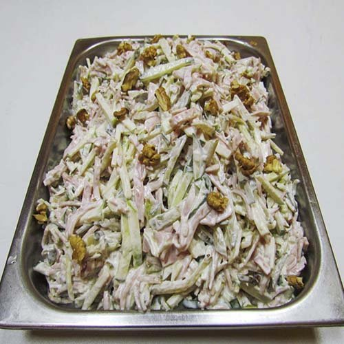
Ветчинный с орехами
Классический салат "Сыр-ветчина" с "изюминкой" в виде грецких орехов, которые положительно сказываются на умственных способностях. Идеальный салат для корпоративных мероприятий.
Королевский салат
Персики, креветки и базилик. Ммммм... Королевское угощение!
Гнездо
Салат с майонезом для праздничного стола и большой компании. Как будто птичка только что улетела.
Карельский с форелью
Рыбный салат с обязательно свежей форелью. По вкусу немного напоминает классическую мимозу, но вкуснее.
Березка
Шедевр кулинарно-декораторского искусства. Вкус родины в классическом исполнении. Этот салат можно просто есть, а можно его обнять и плакать вспоминая о детстве проведенном в деревне.
Балтийский берег
Этот слоёный рыбный салат по достоинству оценят ваши гости. У него есть только один недостаток - настолько красивый, что жалко есть

Икорный
Это блюдо может стать отличной заменой традиционных и надоевших бутербродов с красной икрой.
Аппетитный
Салат основными компонентами которого являются ветчина и сыр. Достаточно привычное, но от этого не менее вкусное блюдо.
Мечта Боцмана
О такой вкуснятине к праздничному столу мечтает не только Боцман, но и все его сослуживцы, их семьи и знакомые. Салат понравится всем любителям крабовых палочек.
Курочка ряба
Один из тех салатов, которые отличаются от советского оливье тем, что вместо колбасы используется вареная курица.
Оливье элитный
Оливье с колбасой высшего сорта и майонезом повышенной жирности. Такого можно съесть и не один тазик.
Лакомство
Нарядная ёлочка с гирляндой из оливок. Она, конечно, не заменит настоящую ель, но запросто может составить ей конкуренцию. А жарким летом принесет прохладу на ваш праздник.


{kind=link}
{kind=link}
{kind=link}
{kind=link}
{kind=link}
{kind=link}
{kind=link}
{kind=link}
{kind=link}
{kind=link}
{kind=link}
{kind=link}
{kind=link}
{kind=link}
{kind=link}
{kind=link}
{kind=link}
{kind=link}
{kind=link}
{kind=link}
{kind=link}
{kind=link}
{kind=link}
{kind=link}
{kind=link}
{kind=link}
{kind=link}
{kind=link}
{kind=link}
{kind=link}
{kind=link}
{kind=link}
{kind=link}
{kind=link}
{kind=link}
{kind=link}
{kind=link}
{kind=link}
{kind=link}
{kind=link}
{kind=link}
{kind=link}
{kind=link}
{kind=link}
{kind=link}
{kind=link}
{kind=link}
{kind=link}
{kind=link}
{kind=link}
{kind=link}
{kind=link}
{kind=link}
{kind=link}
{kind=link}
{kind=link}
{kind=link}
{kind=link}
{kind=link}
{kind=link}
{kind=link}
{kind=link}
{kind=link}
{kind=link}
{kind=link}
{kind=link}
{kind=link}
{kind=link}
{kind=link}
{kind=link}
{kind=link}
{kind=link}
{kind=link}
{kind=link}
{kind=link}
{kind=link}
{kind=link}
{kind=link}
{kind=link}
{kind=link}
{kind=link}
{kind=link}
{kind=link}
{kind=link}
{kind=link}
{kind=link}
{kind=link}
{kind=link}
{kind=link}
{kind=link}
{kind=link}
{kind=link}
{kind=link}
{kind=link}
{kind=link}
{kind=link}
{kind=link}
{kind=link}
Как нас найти
Адрес: Санкт-Петербург; пр.Большевиков; д.6
E-mail: domnevsky@hotmail.com
Телефон: 8(812)588-35-38